Welcome to our virtual graduation party!
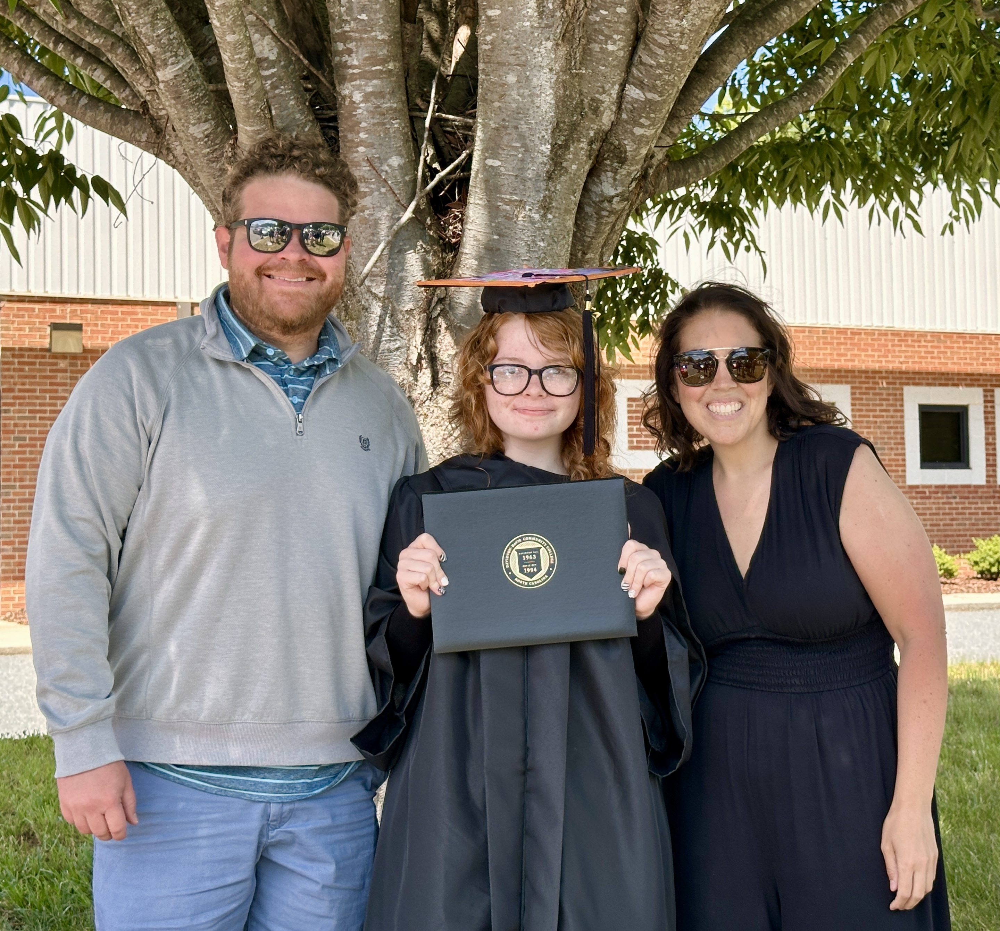
We wish nothing more than for it to have been possible to invite each and every one of you over to our house to celebrate Lizzy, but as we are all spread out across the entire continent of North America, we thought celebrating in this little corner of the internet was the next best thing! Please know if you are ever in central North Carolina you have a standing invitation.
We are so proud of our oldest (and more than a little baffled about how we have a kiddo graduating high school already!), and we appreciate you for whatever part you may have played in her growing up, even if it was just shaping our lives so we could help shape her.
On this website you will find about what she has been up to these past few years as well as what is up next, , , , a spot to , and a spot to if you are so inclined.
We thank you so much for your love, support and prayers for us and all of our kids, and especially Lizzy at this pivotal point in her life.
Curtis and Amy Garrett
A Note From Lizzy
I’m graduating high school! It’s hard to believe, I feel like just last week I was 14 just starting high school. It’s been a lot of hard work and a lot of change, but I’m really happy I made it through to the other side. I want to thank everyone for supporting me and helping me get where I am today. I am so so grateful for all of you and so appreciative of everyone who’s helped me get to where I am! All of you have made such an impact in my life, even people I have never met and who’ve supported me from afar have helped shape me so much into who I am today. So thank you for being there and thank you for supporting me!
My plan has changed a lot in the past 10 years. The earliest thing I remember “wanting to be when I grow up” is when I was 7-9, I loved animals and wanted to be a vet. When I was 12-14, I wanted to be an elementary school teacher, and at 15 I wanted to be an elementary school art teacher. When I was 16, I decided I wanted to be a mental health counselor. Now I am 17 and about to graduate, I’ve decided I want to be a licensed psychologist and help support and diagnose kids with autism. Though the specifics have changed, the main theme throughout everything I’ve ever wanted to do is helping people, and I’m glad I’ve chosen a career where I will be directly helping people.
Technically I’ve been homeschooled this last couple years, but in reality I have been taking full course loads at my local community college. Along with getting my diploma when I graduate, I will also be getting my associates degree. I’ll be two years ahead in college! While taking college classes, I have been volunteering, working, and recently I started a behavior technician course so I can hopefully get a job as an ABA therapy behavior technician after I graduate.
In the fall, I will be moving into the dorms and going to the University of North Carolina at Greensboro! I’m going to major in psychology, and I intend on continuing my education into graduate school and hopefully get a Phd! I want to focus my career around working and helping with autistic kids, and become a licensed psychologist specializing in autism.
Thank you so much again for supporting me in my journey to graduation and continuing to support me in the steps after graduation, I love you all!
Growing Up
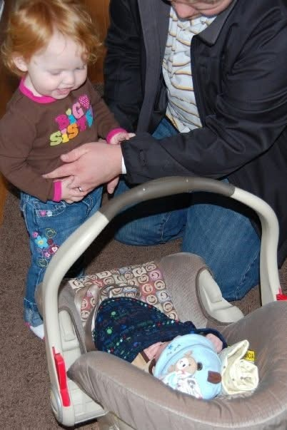
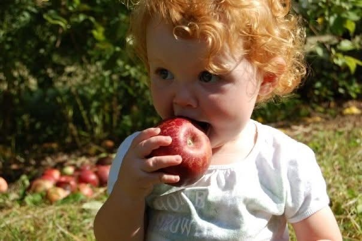
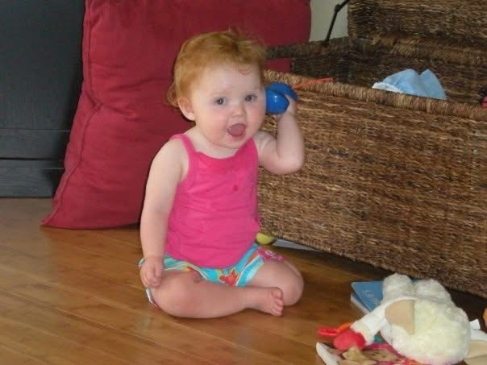
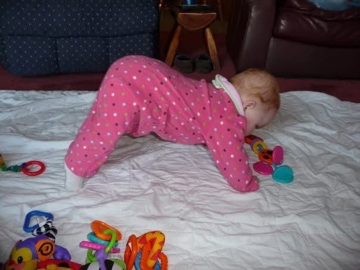
Senior Pictures
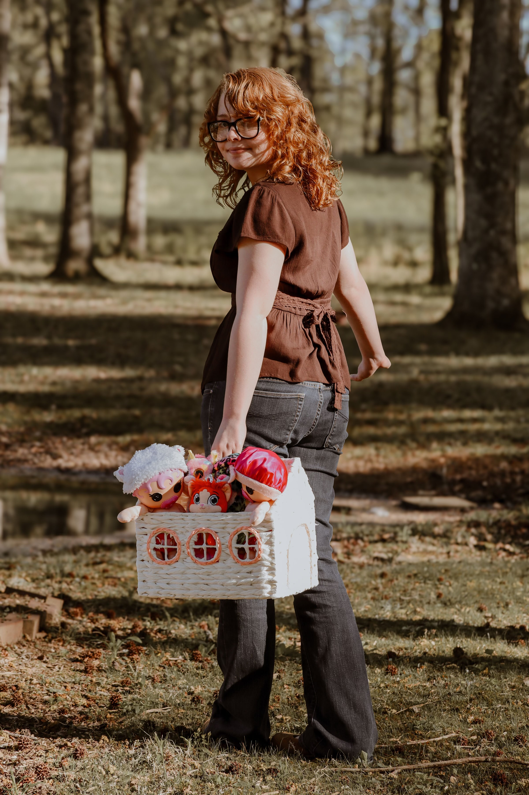
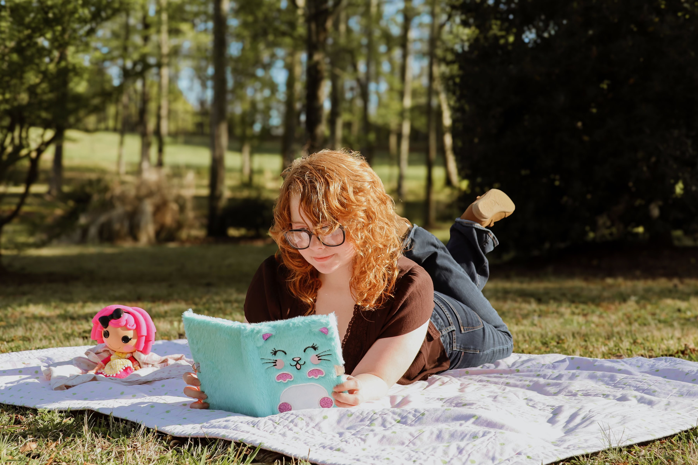
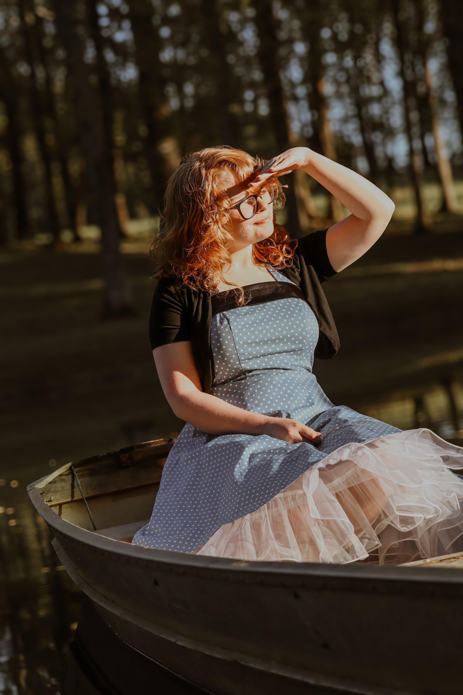
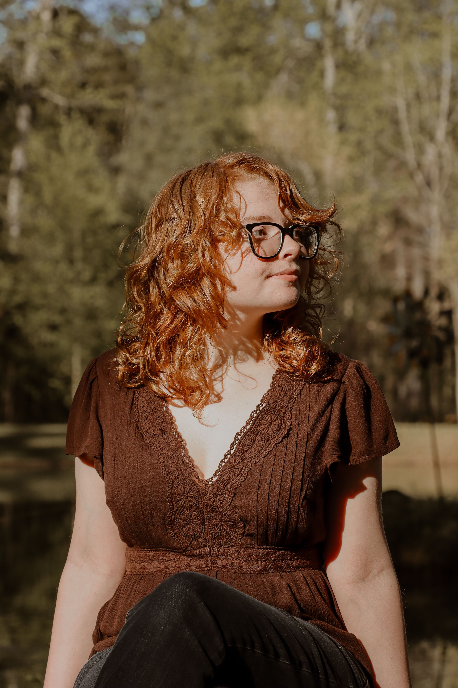
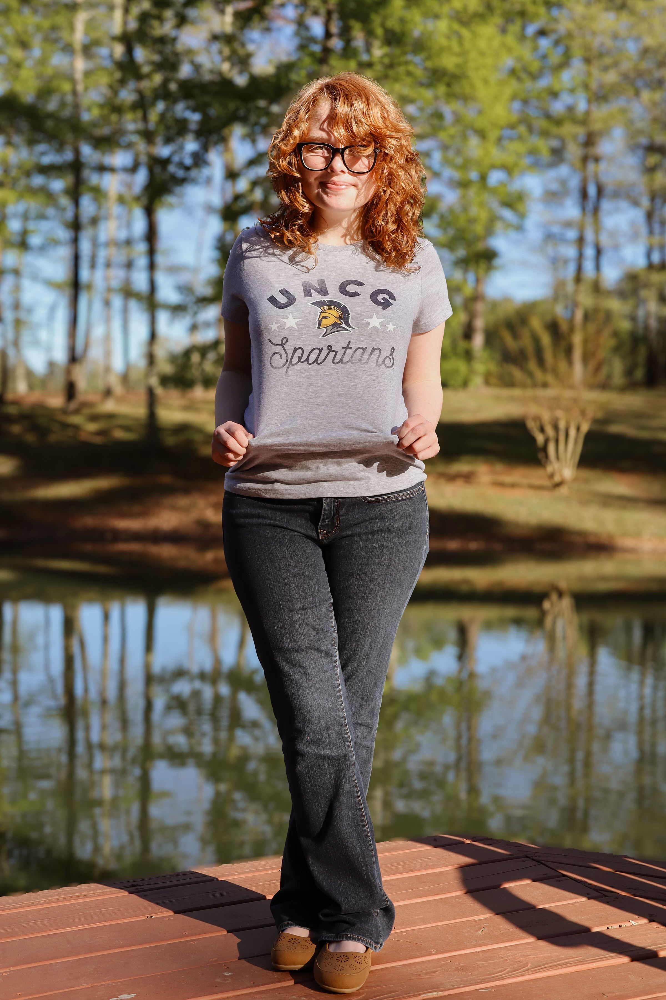
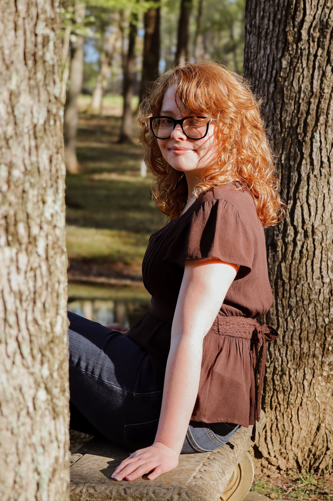
Graduation
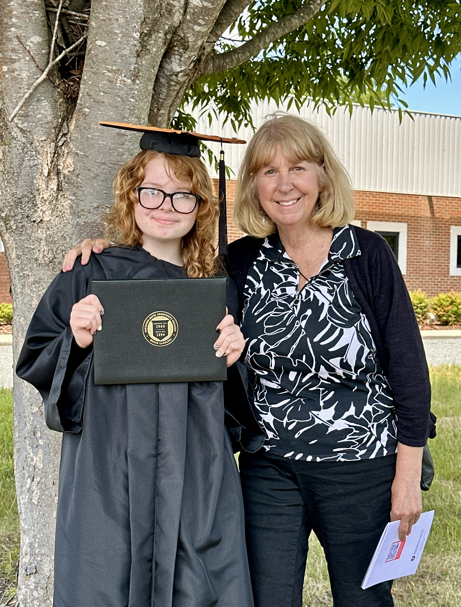


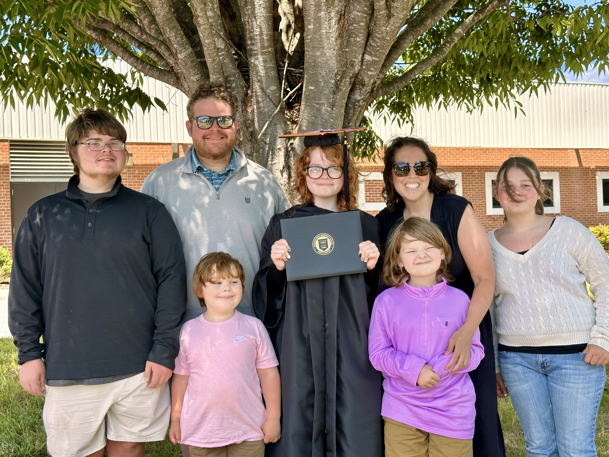
Send Prayers & Well Wishes
Email directly: curtis.a.garrett@gmail.com
Support Lizzy's Next Steps
Gift Registry
View RegistryPhysical Mail
The Garrett Family
3561 Saddle Brook D
Trinity, NC 27370
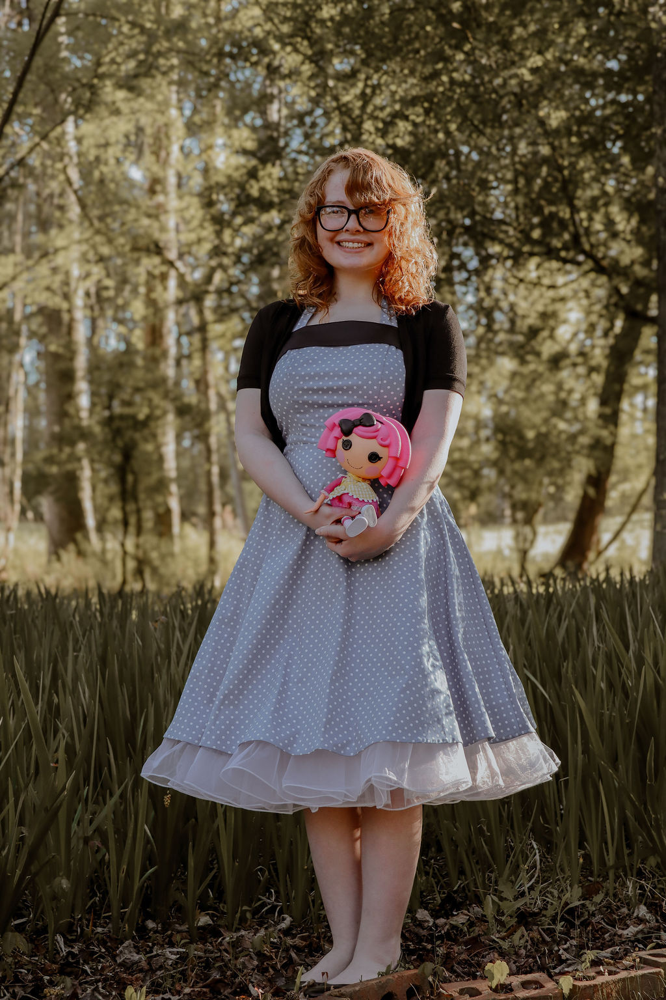